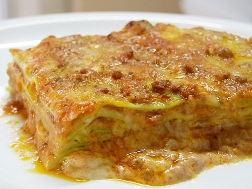

Home
Lasagna

Lasagna is a classic Italian baked pasta dish made with layers of wide, flat pasta (lasagne), a filling (often meat and/or vegetables),
and a sauce, typically tomato and/or béchamel, layered and baked until bubbly and golden
Ingredients
- 12 whole wheat lasagna noodles
- 1 pound lean ground beef
- 2 cloves garlic, chopped
- 1 teaspoon dried oregano
- ½ teaspoon garlic powder
- salt and ground black pepper to taste
- 1 (16 ounce) package cottage cheese
- ½ cup shredded Parmesan cheese
- 2 eggs
- 4 ½ cups tomato-basil pasta sauce
- 2 cups shredded mozzarella cheese
Steps
- Preheat the oven to 350 degrees F (175 degrees C).
- Bring a large pot of lightly salted water to a boil. Add lasagna noodles
and cook for 10 minutes or until al dente; drain.
- Meanwhile, place ground beef, garlic, oregano, garlic powder, salt, and black
pepper in a large skillet over medium heat; cook and stir
until beef is crumbly and evenly browned, about 10 minutes.
- Lay 4 noodles side by side on the bottom of a 9x13-inch baking pan; top with a
layer of prepared tomato-basil sauce, a layer of ground beef mixture, and a layer
of cottage cheese mixture. Repeat layers twice more, ending with a layer of sauce;
sprinkle mozzarella cheese on top. Cover the dish with aluminum foil.
- Bake in the preheated oven until the lasagna is bubbling and the cheese has melted, about
30 minutes. Remove foil and bake until cheese has begun to brown, about
10 more minutes. Allow to stand at least 10 minutes before serving.